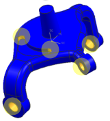
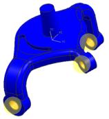
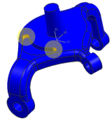

智能选择器选项
您可以使用不同的标准来确定不同的多边形几何体如何以及是否相关。
例如，这些标准确定被认为相切的两个面间的最大角度，或被认为是圆角面的最小和最大半径。默认标准值适合大多数应用，但是您可能还想要调整这些标准，例如，处理很小或很大的部件的时候。
 来控制这些标准。
来控制这些标准。例如，假设您要从某部件中的一些圆柱面中进行选择。通过指定圆柱和圆角面的最小和最大角度，可更有效地过滤选择，以便只选择所要的面，如下图所示。
|

|
最小角度设置为 150，最大角度设置为 360。软件将选择圆柱形孔以及两个部分圆柱形面。
|

|
最小角度设置为 200，最大角度设置为 360。软件仅选择圆柱形孔。
|

|